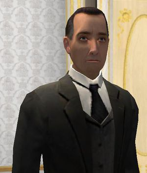

Sherlock Holmes
 De: La Frikipedia, la enciclopedia extremadamente seria.
De: La Frikipedia, la enciclopedia extremadamente seria.

|
La información contenida en este artículo es una mínima parte de su jugo total, así que ponte los guantes, saca el tupperwere y empieza a exprimir el tema. Si lo haces serás recompensado con una galleta en almíbar y algo más.
|
De la serie grandes personajes:
El inmortal Sherlock antes de que las palomas hicieran sobre él... sus cosas.
| Nacimiento
|
1864
|
| Muerte
|
Es inmortal porque bebió del Santo Grial. Se supone cuando los chinos y españoles tengan penes eso
|
| Ocupación
|
Investigar lo que no le importa ni a el ni a nadie.
|
| Nacionalidad
|
Escocés
|
| Malo o bueno
|
Bueno, pero bien enterao.
|
| Atentados contra la humanidad
|
Descubrir el secreto de los Barkley (eran homosexuales)
|
| Religión
|
Ateo
|
| Notas
|
¡El asesino es...!
|
Sherlock Holmes es un vaquero estrecho) y se dedica a reírse de Scotland Yard en sus morros. Tiene un solo "amigo": Watson (que tiene nombre de perro) y le pegaron un balazo en Afganistan después de arruinar un espectáculo de travestís afganos.
Biografía
El fumeta este nació el 6 de enero de 1854. Su padre era un Hacendado (como los del Mercadona) y su madre descendía de Paul Gaugin con ayuda de una escalera de tijera. Tiene un hermano, Mycroft, que es el que manda en el país de Pensilvania (lugar de invención de los lápices),también fundó una empresa de informática llamada Mycrosoft pero un tal Bill Gates se la cambió por un bocata de choped.
Holmes parece haber sido un estudiante en la Universidadde Oxbridge, donde se dedicaba a jugar al mus y a beber cerveza. Abandonó la universidad después de que la profesora MacGonadah lo descubriera haciendo trampas al strip-mus en los dormitorios de Griffindor borracho y cantando jotas mallorquinas.
Conoce a Watson en 1881, en el Hospital Saint Bartholomew donde Holmes había ido a que le practicasen una exploración de próstata por placer. Watson y Holmes entablaron una animada conversación respecto a las bondades de hacer ejercicios de esfinter con bolas chinas media hora cada día antes de cenar. Esta costumbre la practicaban ambos, Watson desde que estuvo destinado como agregado en la embajada de Saigon y Holmes a raíz de los viajes haciendo de mula con bolas de heroína en el expreso vespertino de Cambridge para pagarse los estudios.
Su gran enemigo es el profesor Moriarty, quien llegó a mandar a criar malvas al detective en la cascada de Reichenbach. Su escritor tuvo que optar por resucitar a su héroe con el Santo Grihander mas tarde porque quería dinero pá irse de guateque.
Tras una carrera de 23 años, Holmes se retiró a Sus-sex, donde se dedicó a dejarse picar por abejas mientras tocaba a Debussy (literalmente, no sus composiciones) a la luz del atardecer.
Posteriormente a su jubilación como "detective", se dedicó dos años a preparar una importante acción de contraespionaje a Ronald McDonald por culpa de un cabreó que cogió al encontrar una pezuña de vaca entera en un Bic-Mag.
Nada más se sabe de él, hay quien dice que está muerto y que Watson lleva flores a su tumba cada tarde antes de hacer sus ejercicios de bolas chinas, otros opinan que está muerto pero que Watson no se acuerda de él y los más conspirativos afirman que lo han visto de fiesta loca en Las Vegas, con Dean Martin y Frank Sinatra Jr.
Manías de Sherlock
 Sherlock viendo a Adler en cueros
Sherlock tiene muchas absurdas manías. Estas son algunas de ellas:
- Clava la correspondencia de sus clientes con en cuchillo en su mesa (se ve que los aprecia).
- Guarda su pipa en el cubo del carbón.
- Su tabaco está guardado en una asquerosa zapatilla turca.
- Se ríe constantemente del retrasado de su ayudante (que no ayuda).
- Está fijo en su laboratorio manipulando venenos.
- Toca el vioín a las 3 de la mañana.
- Sólo come y se baña cuando no tenga nada que investigar.
- No sabe que la Tierra gira alrededor del Sol.
- Se pega a veces todo el día quieto parao.
- Tiene una obsesioón por decir Elemental, mi querido querido juano.
- Le encanta hacer grafitis a base de tiros en la pared de su habitación.
Otros vicios
Además de ponerse hasta arriba fumando mariguana tabaco en su pipa también le va eso de pincharse insulina alegando que se la ha recetado Watson.
Enemigos Amigos de este fumeta
- Juano: El que le tocaba las narices.
- Señora Hudson: Su casera (que esta de él hasta los huevos).
- Irene Adler: Una mujer fatal de nueva Jersey.
- Moriarty: Un tío encorvao con una joroba de camello que es el peor enemigo de Holmes.
- Los irregulares de Baker Strett: una panda de niños vagabundos sin papeles que trabajan para Holmes por una miseria.
(Lo lamento, pero Holmes es un insociable que no tiene más amigos).
Teorías acerca de sus métodos de deducción
- Teoría 1: La lupa oráculo. Según la o.q.m.a.d.s.d.l.m. (organización que me acabo de sacar de la manga), la lupa de El fumeta es el oráculo y con ella puede ver todo lo que pasó.La pega es que a veces adivina las cosas sin necesidad de la lupa (También se piensa que es antepasado de Raven y tiene visiones).
- Teoría 2: La cámara oculta. Según la o.s.c.d.r.(organización secreta con datos restringidos), El fumeta tiene cámaras ocultas por todo el mundo con forma de oso de peluche. La pega es que en esa época no se habían inventado los osos de peluche.
- Teoría 3: La lógica. Según la g.c.a.d.s.c (gente con algo de sentido común), El fumeta averigua las cosas siguiendo un proceso lógico. La pega es que esta no es porque lo digo yo.
Curiosidades
- ¿Sabías que tu oso de peluche tiene una cámara que le puso Sherlock Holmes?
- ¿Sabías que cuando Sherlock Holmes dijo "un tonto siempre encuentra a otro más tonto que lo admire", con lo de tonto se refería a él y con lo de más tonto se refería a Watson?
- ¿Sabías que Watson te esta apuntando con su revólver y Sherlock esta detrás de ti con su látigo de caza?
- ¿Sabías que te ve cuando te masturbas?
Superpoderes
- Puede descubrir a un criminal por la roña de la uña del pie de su perro.
- Puede estarse quieto durante varias horas y así camuflarse como una estatua.
- Puede caerse por una catarata y resucitar.
- Puede matarte con su perverso ejército de abejas asesinas.
- Puede comprar malvadas mascotas de Pensilvania (donde manda su hermano)
- Es inmortal porque bebió del Santo Grial.
- Puede patear cojones a tipos malos (anglo-iraquies y tu antepasados)
- Puede deducir cosas que a la gente no le importa.
Frases celebres
- Cuando cayó por la catarata de Riechenbach:
*AAAAAAAAAAAAAAaaaaaaaaaaaaaaaaaaaaaaaaaaa... glup
- Cuando Juano hizo una mala deducción:
*¿Tú eres tonto o que te pasa?
- Cuando Juano afirmó que era una deducción tonta:
*Elemental, mi querido Watson.
- Cuando Holmes vio a Moriarty por primera vez:
*¿Por qué le habrán echado ácido a la cara?
- Cuando Holmes afimó esto pasaron 10 años:
*Fumar y Beber son dos vicios en mi vida que no puedo dejar”
*.........(no dijo nada).
Autor(es):
- Fordus
- Frikiman
- Roms
- Conan
- Maestre Percola
- Bladguer
- Yo no tu
- Arsenè Lupin
- Mrs delbert
- Gñapero Solitario
Frikipedia 2005-2016, Licencia
GFDL 1.2 - Extraído por FrikiLeaks